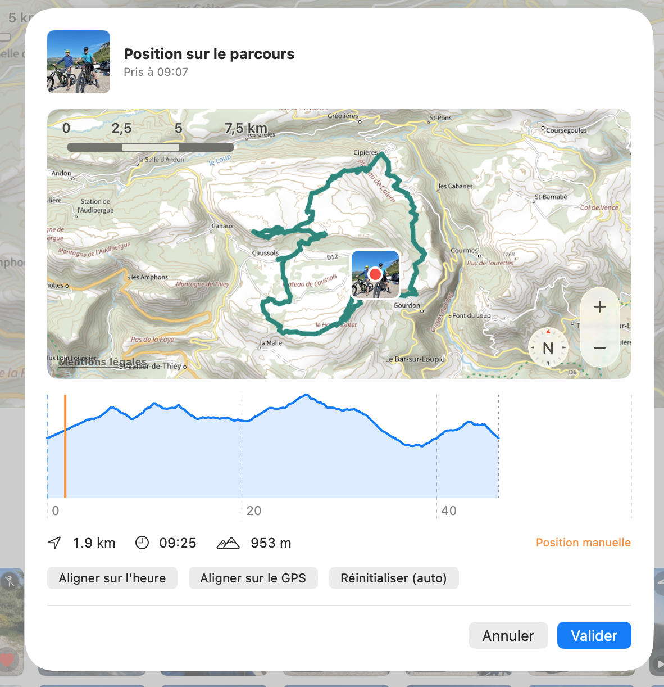
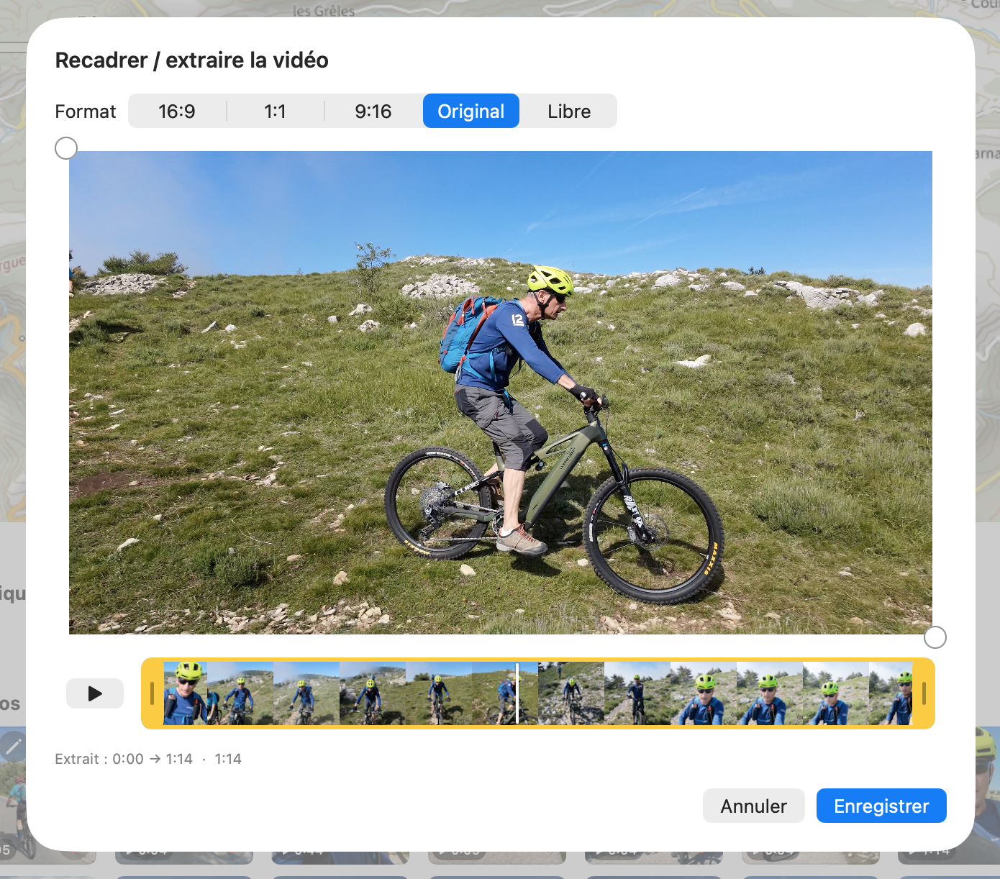
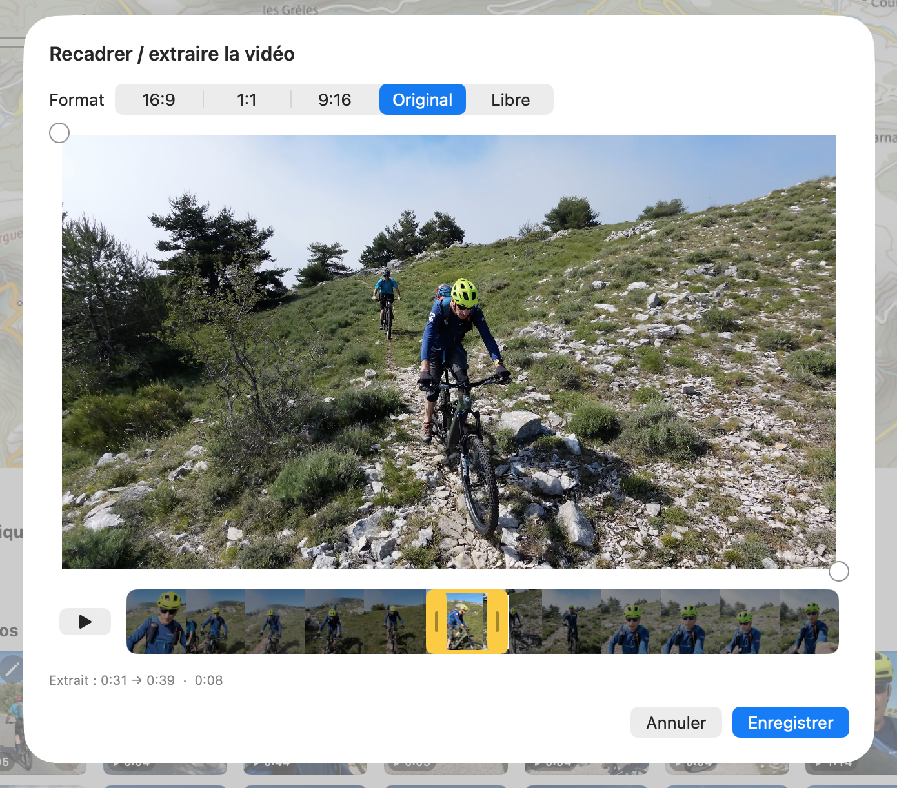

Gérer vos photos & vidéos
GPXManagement retrouve les photos et vidéos prises pendant une sortie et les place le long du parcours. Vous pouvez ensuite ajuster leur position, choisir lesquelles afficher, et recadrer ou raccourcir vos vidéos.
La légende des badges
- Position sur le parcours (en haut à gauche) — ouvre le réglage de l'endroit de la photo le long de la trace. Fond bleu = position réglée à la main.
- Heure et GPS en désaccord — l'heure de prise et les coordonnées GPS divergent ; le badge position passe au triangle orange. Cliquez pour positionner la photo manuellement.
- Modifier — recadrer une photo, ou recadrer / extraire une vidéo. Fond bleu = déjà modifiée.
- Afficher sur la carte (en haut à droite) — épingle pleine = visible sur la carte et le profil ; épingle barrée = masquée.
- Favori — marque la photo comme favorite dans l'app Photos d'Apple (synchronisé avec vos appareils).
Sur la carte
-
1
Les photos apparaissent toutes seules
Ouvrez une sortie : la section Photos & vidéos liste les médias pris pendant l'activité. Ils sont placés sur la carte et le profil d'après leur heure de prise croisée avec la trace — ou d'après les coordonnées GPS quand la photo en contient.
 📷 Capture à ajouter :
📷 Capture à ajouter : aide/photos-videos/img/etape-1.png -
2
Afficher ou masquer toutes les photos
L'interrupteur Sur la carte, en haut de la section, affiche ou masque d'un coup tous les repères photo sur la carte et le profil.
-
3
Choisir photo par photo
Le badge épingle en haut à droite d'une vignette bascule cette photo seule : épingle pleine = affichée, épingle barrée = masquée. Pratique pour ne garder sur la carte que les meilleurs clichés.
Ajuster une photo
-
4
Repositionner sur le parcours
Le badge position (en haut à gauche) ouvre la fenêtre « Position sur le parcours » : faites glisser la vignette sur la carte ou sur le profil pour la placer exactement où la photo a été prise. La distance, l'heure et l'altitude du point choisi s'affichent en dessous.
Trois raccourcis sont proposés : Aligner sur l'heure (replace d'après l'heure de prise), Aligner sur le GPS (d'après les coordonnées de la photo) et Réinitialiser (auto) (revient au placement automatique). Dès que vous déplacez la vignette à la main, la mention « Position manuelle » apparaît et le badge devient bleu ; cliquez Valider pour mémoriser.

📷 Capture à ajouter :aide/photos-videos/img/etape-4.png -
5
Quand l'heure et le GPS divergent
Si l'horloge de l'appareil photo et les coordonnées GPS ne concordent pas, le badge passe au triangle orange ⚠︎. C'est un simple signal : cliquez dessus pour fixer vous-même la bonne position sur la trace.
-
6
Marquer une favorite
Le cœur marque la photo comme favorite directement dans l'app Photos d'Apple — le réglage est donc partagé avec tous vos appareils.
Recadrer & extraire une vidéo
-
7
Ouvrir l'éditeur
Le badge crayon ✏︎ ouvre l'éditeur. Sur une photo il permet de recadrer ; sur une vidéo il ouvre « Recadrer / extraire la vidéo ».
-
8
Choisir le cadrage
En haut, choisissez un format : 16:9, 1:1, 9:16, Original ou Libre. Déplacez et redimensionnez le cadre sur l'image pour ne garder que la zone voulue (idéal pour passer un rush paysage en portrait pour les réseaux).

📷 Capture à ajouter :aide/photos-videos/img/etape-8.png -
9
Extraire un passage
Sous l'image, la pellicule jaune montre le film image par image. Faites glisser les poignées jaunes aux extrémités pour ne conserver qu'un extrait : la zone hors poignées (assombrie) sera coupée, et la durée retenue s'affiche en dessous.
Le bouton lecture rejoue l'extrait sélectionné en boucle pour vérifier.

📷 Capture à ajouter :aide/photos-videos/img/etape-9.png -
10
Enregistrer
Enregistrer crée une nouvelle version recadrée / raccourcie de la vidéo. La vignette signale ensuite qu'elle a été modifiée (badge crayon bleu) ; vous pouvez la rouvrir pour la retoucher.